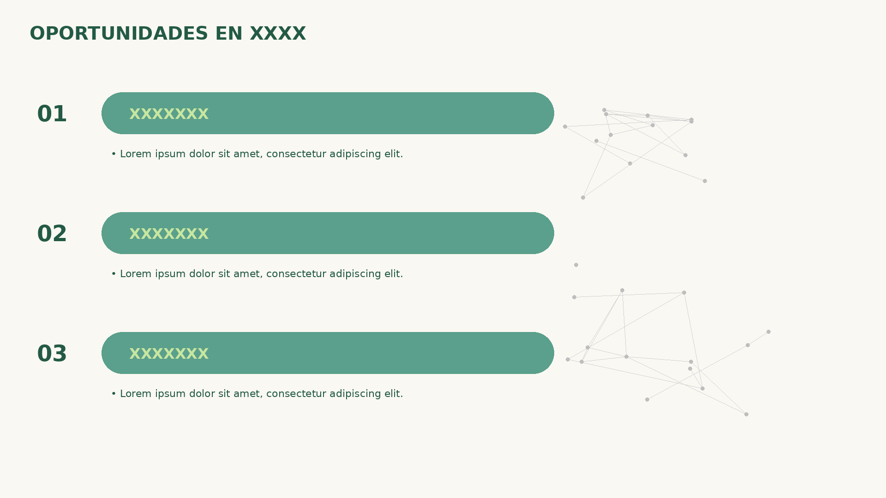

Título: OPORTUNIDADES EN <rubro/marca>. Tres oportunidades en orgánico; cada bullet debe anclarse a evidencia del ecosistema (gaps de formato, frecuencia, temáticas no cubiertas).
OPORTUNIDADES EN <rubro/marca>